Expressing
R
42. The circles
are written in the reverse direction to express the addition of
R.
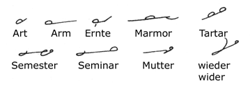
At the beginning or end of straight
strokes or between two straight strokes in the same direction.
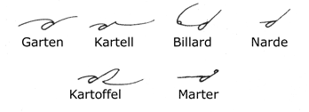
Between any horizontal and any upstroke.
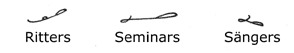
The reverse circle is turned into
a loop to show the addition of S (the sign of the genitive of strong
nouns).
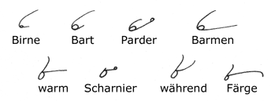
Between a downstroke and T,
D, N, M; also between F, V,
and K, G, NT.
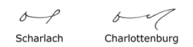
Between the straight downstrokes
and L. (From the second word given it will be seen
that final B stands for the suffix BURG in proper
names).
43. The Prefix ZER
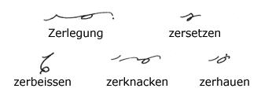
The second form of Z represents
the syllable ZER. It is joined whenever possible
but disjoined before a vowel or if a bad joining results.
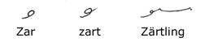
ZAR, ZÄR,
are written as shown, alone or before T.
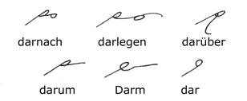
DAR standing alone (as a separable
prefix) is written to rule, but when it is actually prefixed to
other words, it is written as shown above.
44. -HALBEN
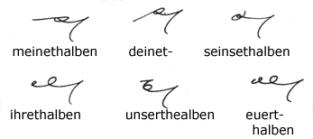
The method of writing these words
must be carefully noted.
45. Omission of R
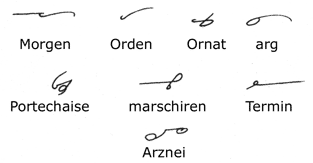
The letter R is usually
omitted from the syllables ER, AR, OR.
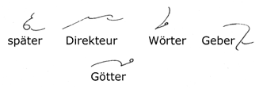
Disjoined R represents the
syllables EUR and ER affixed to word-signs, when
the reversing principle cannot be used.
46. Word-signs
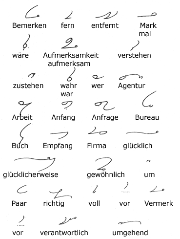
This is the last list of word-signs
to be memorized.
- Next Page - |